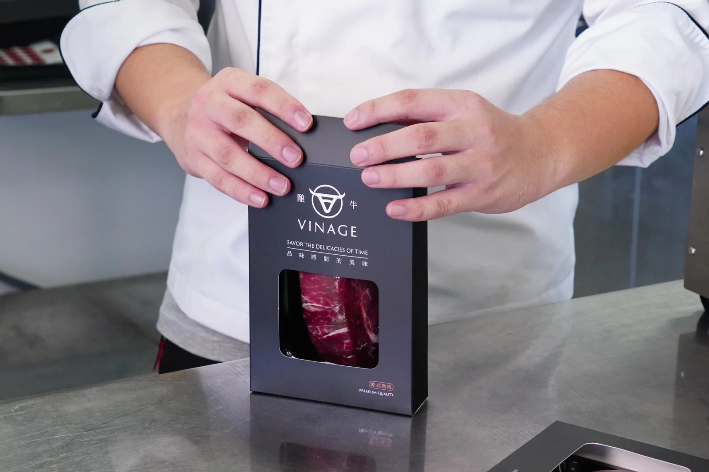
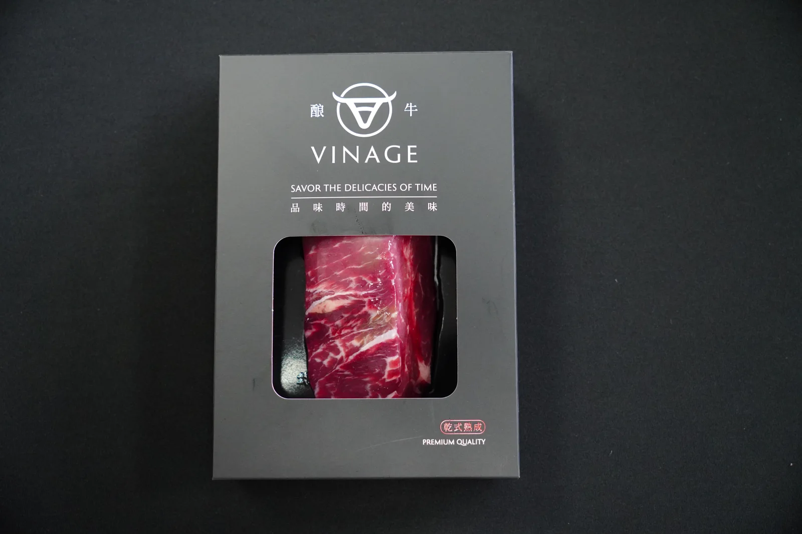
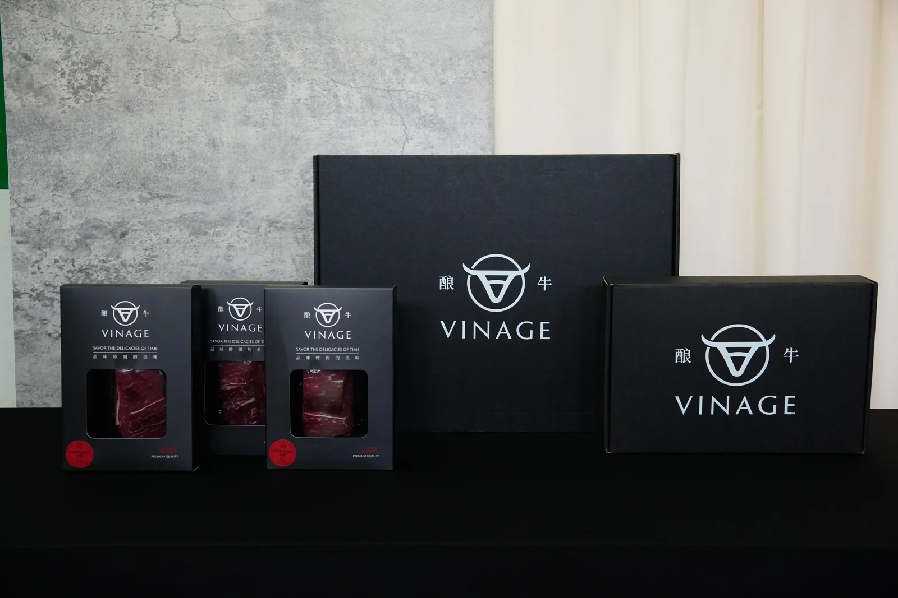
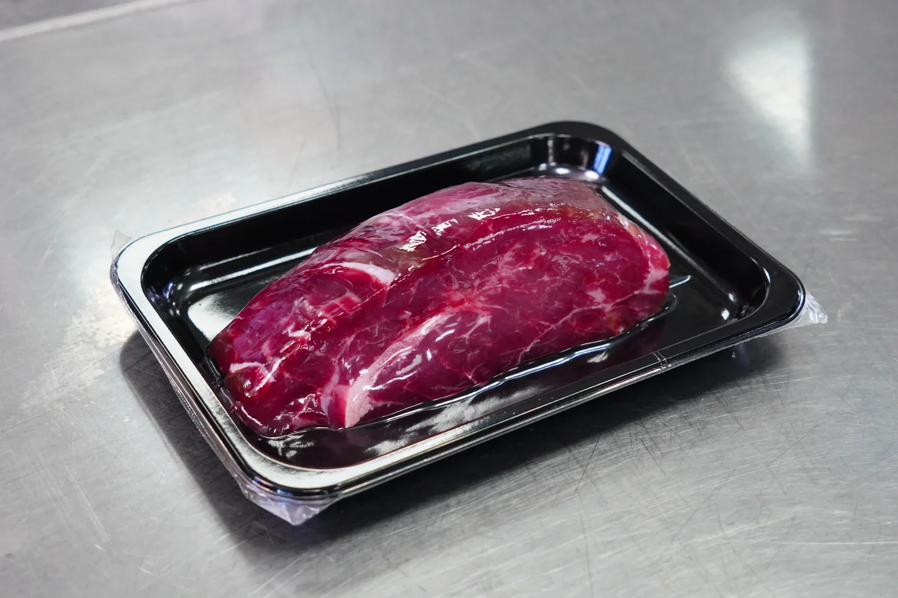
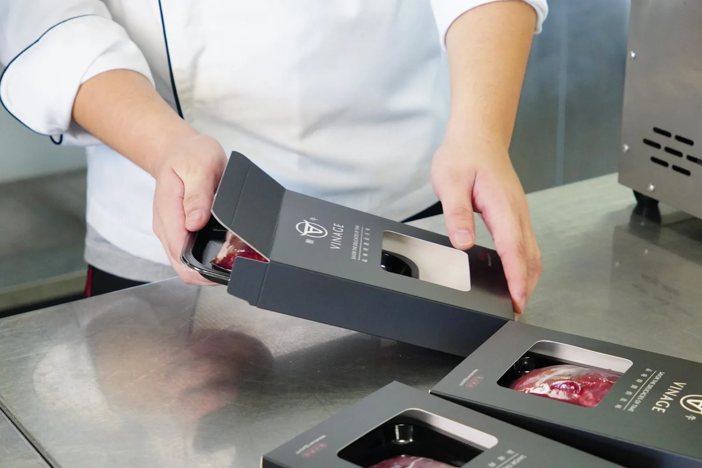

日常跳剪 客廳
在客廳伸懶腰
站在沙發旁，自然伸個懶腰，像是待在家裡放鬆。
無台詞，日常動作快剪
表演 身體放鬆，不用刻意看鏡頭。
剪接／音效 開場直接進日常畫面，無台詞；動作快速接下一鏡。
VINAGE / SHOOTING GUIDE
酿牛
拍攝腳本.
輸入密碼查看影片腳本與拍攝參考。
VINAGE / SHOOTING SCRIPT
兩支影片的畫面、動作與台詞。下方也有穿搭、場景及商品參考。
01 / THE SCRIPTS
選擇影片後往下滑，依序查看畫面、走位、動作和台詞。
在家突然餓了，發現原本要送人的牛排。先是猶豫、走開又回來；拿起牛排後，下一鏡卻已經煎起來，還一本正經地說是幫對方試吃。
ACTING ROUTE / 動作與走位
客廳日常跳剪 → 沙發發現肚子餓 → 冰箱猶豫 → 爐台料理 → 中島試吃與下單。往下滑查看每個動作、眼神與台詞；走位依現場確認。
人物與部分場景、商品為 AI 分鏡示意；實際場地、牛排大小及包裝以實拍及現場實物為準。
隨捲動切換畫面；文字為動作與台詞。
日常跳剪 客廳
站在沙發旁，自然伸個懶腰，像是待在家裡放鬆。
無台詞，日常動作快剪
表演 身體放鬆，不用刻意看鏡頭。
剪接／音效 開場直接進日常畫面，無台詞；動作快速接下一鏡。
日常跳剪 客廳
沿著茶几旁的空間走兩步，視線自然落在沙發方向。
無台詞，接上一鏡跳剪
表演 像在家裡隨意走動，依現場走道調整。
剪接／音效 硬切到客廳走動，維持輕快的日常節奏。
日常跳剪 客廳
拿起手機，看一下螢幕，往沙發走。
無台詞，接日常動作快剪
表演 像準備坐下滑手機，動作自然。
剪接／音效 跳剪到拿手機，動作結束接坐下。
開場 客廳沙發
坐在棕色沙發上放鬆滑手機，讓前面的快剪落到安靜的日常一刻。
無台詞，動作自然銜接
表演 視線在手機上，不用看鏡頭。
剪接／音效 跳剪到沙發滑手機，節奏稍微放慢。
開場 客廳沙發
滑到一半停住，手放到肚子上，低頭一下，再往廚房方向看。
「完了……突然好餓。」
表演 先感覺到餓，才說出口；日常自然，不必誇張。
剪接／音效 手機畫面停住，留一小拍；可微幅推近表情，台詞搭配字幕「突然好餓」。
接續 客廳往廚房
從沙發起身，沿客廳走道往廚房與冰箱走。
無台詞，接冰箱畫面
表演 起身、轉身、走開依現場空間及機位調整。
剪接／音效 起身動作接切到冰箱前，保留腳步或環境聲。
01 / 09 冰箱前
打開冰箱找東西，眼神停在真空包裝牛排上。
「……不行，這是過年要送人的。」
表演 視線黏在牛排上，是真的想吃，但先忍住。
剪接／音效 切冰箱內視角，讓牛排與視線同時入畫，留冰箱門聲。
02 / 09 冰箱前
她的手慢慢伸向牛排，快碰到時停住。
無台詞，以動作和停頓表現
表演 眼睛看著牛排，嘴巴微抿，讓人看出她還在掙扎。
剪接／音效 切手與視線特寫，伸手時放慢一點，停住留半拍。
03 / 09 冰箱前
她把手收回來，關上冰箱。
無台詞，以動作和停頓表現
表演 表情像在提醒自己：這是要送人的。
剪接／音效 接收手、關冰箱，保留關門聲；不用額外字卡。
04 / 09 冰箱外
她關上冰箱，轉身離開；以示意圖機位來看，面向畫面左側走兩步，冰箱留在她身後右側。
無台詞，以動作和停頓表現
表演 身體往前走，動作自然，不用刻意回頭。
剪接／音效 切回廚房側面機位，順著轉身動作接走開。
05 / 09 冰箱外
腳步停住，肩膀和上半身一起輕輕轉向畫面右側的冰箱，視線自然跟過去。
無台詞，以動作和停頓表現
表演 像是走開了又忍不住想看一眼；肩頸放鬆，停半拍讓剪接接上。
剪接／音效 她停住後留半拍，微幅推近表情，再接回頭；可配一聲輕巧的提示音。
06 / 09 回冰箱
看一眼冰箱後把視線收回，沿剛才的路往後退回冰箱前；轉身面向冰箱，伸手打開。
無台詞，以動作和停頓表現
表演 像若無其事地退回來，保持肩頸放鬆；方向與步伐依現場走道調整。
剪接／音效 從回頭硬切到倒退回冰箱，動作節奏俐落；接開門聲。
07 / 09 冰箱前
她拿起一包真空包裝牛排，低頭仔細看。
無台詞
表演 猶豫一下，眼神停在牛排上；接著直接切到下一個畫面。
剪接／音效 切冰箱視角與手上牛排，猶豫停半拍；下一鏡直接跳到鍋中。
08 / 09 爐台
畫面直接切到牛排已在鍋裡滋滋作響。她拿料理夾，視線淡定地轉向鏡頭。
「送人的東西，總要先幫他試吃吧？」
表演 從拿著牛排直接跳到下鍋；台詞講得認真、理直氣壯，不必先笑。
剪接／音效 拿著牛排直接跳切到下鍋，配合滋聲，讓前後反差成為笑點。
09 / 09 爐台
她說完將視線轉回鍋子，接料理特寫、試吃與空盤。
無台詞，以動作和停頓表現
表演 眼神可以在鏡頭停一下，再回到鍋子；動作繼續，笑點交給剪接。
剪接／音效 台詞後切回鍋面，讓料理動作自然接下去。
料理 廚房爐台
在爐台用料理夾把牛排翻面，鏡頭靠近鍋面。
無台詞，保留煎肉聲
表演 注意手部位置；料理特寫使用另外準備的已解凍牛排。
剪接／音效 料理特寫快剪：夾起、翻面；保留煎肉聲。
料理 廚房爐台
用淋勺把鍋裡的奶油淋到牛排上，接近拍攝滋滋作響的畫面。
無台詞，保留料理聲
表演 動作俐落，眼神看著鍋子。
剪接／音效 接淋奶油特寫，保留鍋中滋聲。
料理 白色中島
牛排起鍋後放上木質切菜板，切開拍攝切面。
無台詞，保留切肉聲
拍攝 中島作為料理與切肉位置，畫面以手部特寫呈現。
剪接／音效 硬切到切面特寫，保留刀具與切肉聲。
試吃 中島
拿起一小塊試吃，咀嚼後停半拍，眼睛自然亮起來。
「……好吃欸。」
表演 先感受味道再反應，不必刻意誇張。
剪接／音效 切人物第一口，反應停半拍後說台詞。
試吃 中島
快剪再吃一口、又一口，接空盤；她看著空盤停住，想起這原本要送人。
「欸……少一塊怎麼送？」
表演 先看空盤愣一下，再看向剩下的牛排，留半拍反差。
剪接／音效 吃一口、再一口的跳剪接空盤；空盤出現後短暫停格，搭配小問號字幕與輕巧提示音。
結尾 中島
視線從空盤移到手機，拿起手機準備下單。
「算了，再買一盒。」
表演 想到解決辦法，動作俐落；畫面不需顯示虛構的購物頁面。
剪接／音效 硬切手機與人物反應，台詞落下後收尾；無需顯示購物頁面。
一支自然的居家開箱 Vlog：拿出牛排、比較大小，再把六盒排開；開盒時就看到六盒，先比較一塊牛排的大小，再看整盒份量，最後有點捨不得送。
ACTING ROUTE / 動作與走位
中島打開禮盒、看到六盒 → 拿出一盒 → 手掌、手機與飲料比較 → 把六盒排開 → 看著手上的一盒。
人物及部分場景、商品為 AI 分鏡示意；實際場地、商品外觀、尺寸及六入禮盒擺放方式以現場實物為準。
隨捲動切換畫面；動作、眼神與台詞請看旁邊說明。商品實拍參考
開場 中島
鏡頭已經在拍，她把禮盒拉到自己面前並打開，看見盒內六盒，也讓鏡頭看到；接著拿起其中一盒。
「這一盒裡面有六塊牛排。」
表演 低頭看禮盒，自然分享看到的內容；視線跟著手上的商品，不急著看鏡頭。
剪接／音效 直接進開箱動作，保留盒蓋與包裝聲，建立 Vlog 感。
開箱 中島
看著單品盒上的 8oz，從外盒抽出真空包裝牛排，拿近一點看。
「它一塊是 8 盎司欸，我拿出來比一下。」
表演 低頭看著牛排，帶著好奇，不用刻意驚呼。
剪接／音效 接牛排與人物反應，動作停一下再說台詞。
比較 中島俯拍
將真空包裝牛排平放在中島，手掌自然放到牛排旁邊；低頭看一眼，稍微調整手的位置。
「等一下，我比給你們看。」
表演 手掌和牛排放在同一平面；鏡頭比較肉本身。
剪接／音效 切俯拍手和牛排；讓兩者同平面入鏡。
比較 中島俯拍
把手移開，順手拿比較用的手機放在牛排旁，再把飲料罐放到另一側。
「手機……」
「還有這個。」
表演 放好後停半拍看看桌面；手機、飲料和牛排維持同一平面。
剪接／音效 手機、飲料依序跳剪，保留道具輕放聲。
接續 中島
將手機和飲料推到旁邊，把剛比較的牛排放回單品盒，準備將其他盒排出來。
無台詞，接排開商品的動作
表演 自然整理中島上的商品，接續開箱。
剪接／音效 切回人物中景，順著整理商品的動作接俯拍。
排列 中島俯拍
把手上的第一盒放在中島，再從禮盒拿出剩下五盒，接在旁邊排開。
無台詞，配合節奏排列六盒
表演 自然一盒一盒排開；畫面總共六盒。
剪接／音效 一盒接一盒快剪，保留落桌聲；字幕數字隨每盒出現，最後停在 6。
反應 中島
站在中島後方，視線慢慢掃過排好的六盒。
無台詞，讓鏡頭看清六盒份量
表演 看著桌面六盒，稍停半拍，接著自然伸手拿起一盒。
剪接／音效 切人物和六盒同框，放慢半拍讓份量出現。
結尾 中島
順手拿起離自己最近的一盒，低頭看看包裝；其他五盒留在中島。
「這個本來是要送人的欸……」
表演 動作放鬆，像是在繼續看剛開箱的東西；停半拍。
剪接／音效 接拿起一盒與低頭看包裝；留下短暫停頓。
結尾 中島
看一眼桌上剩下的五盒，視線回到手裡那盒。
「可是我現在有點不想送了。」
表演 像不小心說出心裡話，說完自己笑一下；不用抱緊盒子或刻意裝心虛。
剪接／音效 接剩下的五盒與她手上的一盒，讓台詞和笑容自然收尾。
收尾 商品特寫
使用真正的酿牛商品實拍特寫；獨立字卡顯示「每塊牛排至少 8oz」「大盒 6 塊｜$5,888」。
無台詞，保留動作與現場聲音
表演 此鏡無台詞。價格與規格以上片前確認為準。
剪接／音效 切實際商品特寫與資訊字卡；規格、價格以上片前確認為準。
ON LOCATION / 拍攝環境
以下依場地照片規劃；實際走位、機位與物品擺放，拍攝當天再依現場確認。
第一支開場在棕色 L 型沙發滑手機，接著起身往廚房走。窗邊光線與起身方向依現場機位調整。
可作為第二支比較大小、打開禮盒與排列商品的桌面。第一支料理與試吃位置依現場確認。
第一支會走到冰箱前猶豫，接著拿出真空包裝的牛排。料理鏡頭參考照片中的爐台、白色檯面和水槽區域。
THE REAL PRODUCT / 真實商品
參考實際包裝與牛排外觀；六入禮盒的擺放方式以現場為準。

手持實拍照可參考單品盒與雙手的相對大小；六入大禮盒的尺寸與排列以現場實物為準。



